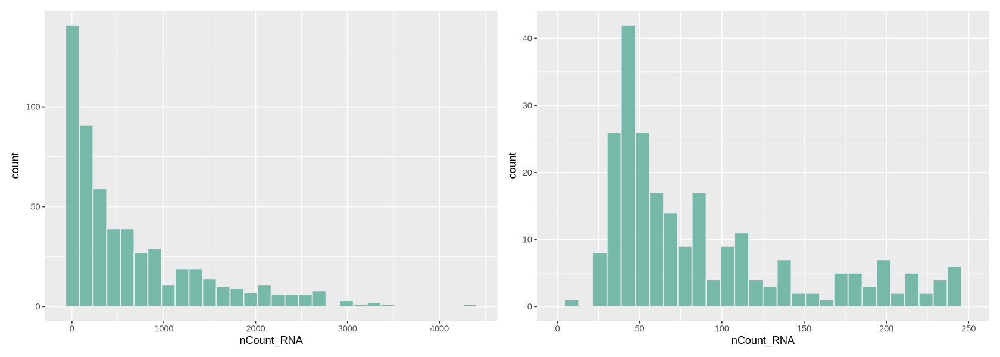
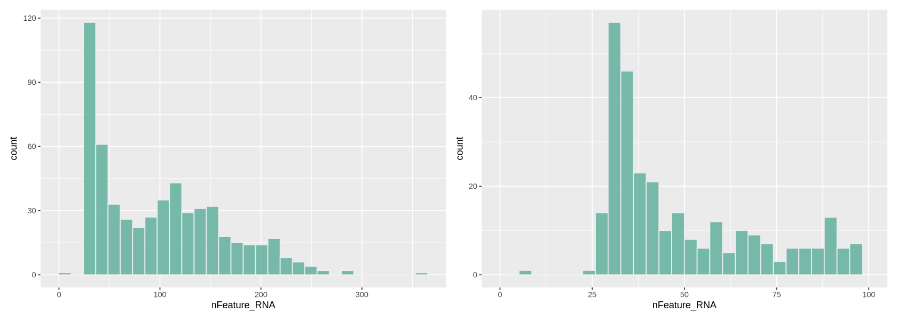
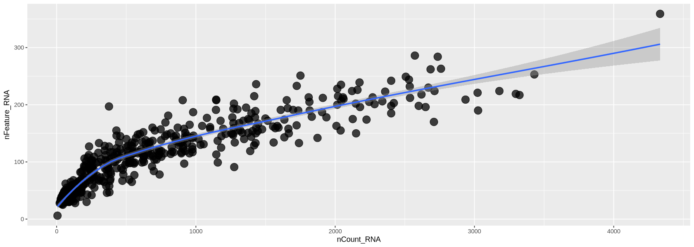
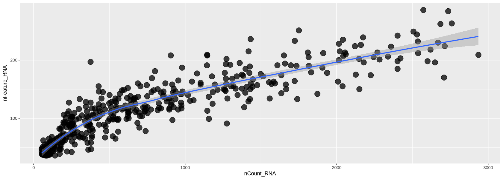
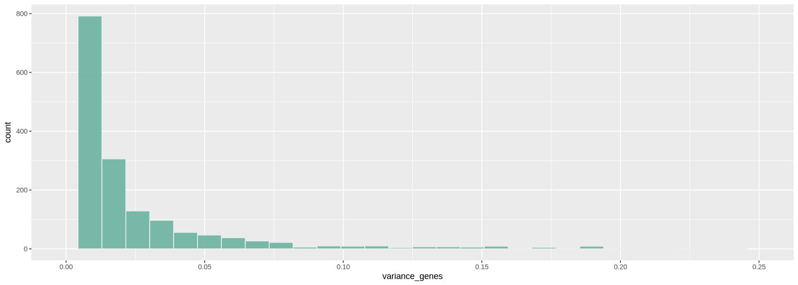
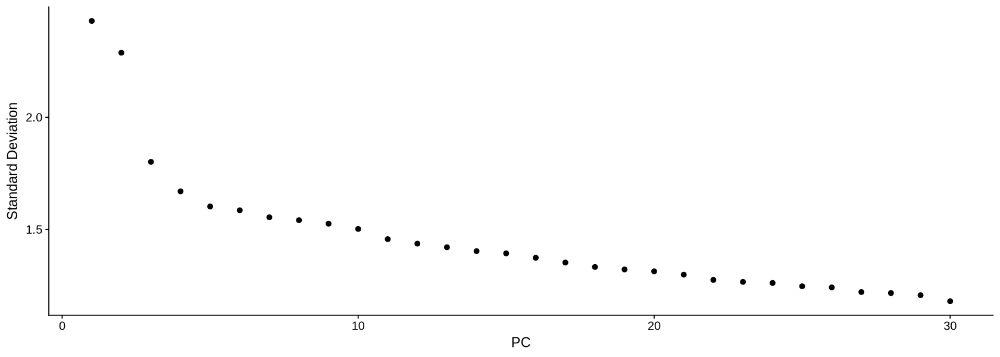
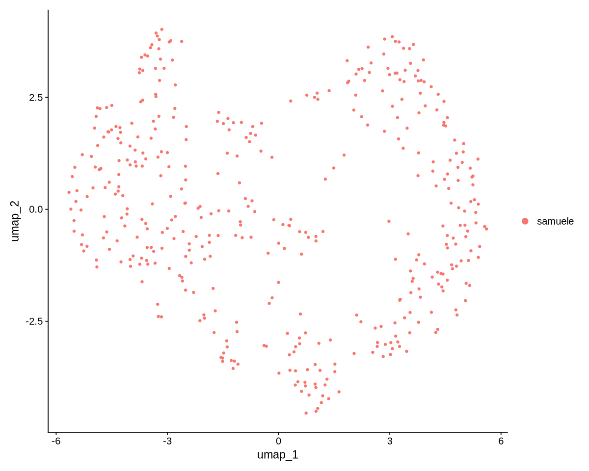

pacman::p_load('Seurat', 'parallel', 'multtest', 'metap', 'purrr', 'dplyr', 'stringr', 'tibble', 'ggplot2', 'MAST', 'WGCNA', 'hdWGCNA', 'patchwork', 'stringi')Preprocessing
NoteLearning outcome
We will answer to the following questions:
- How can I import single-cell data into R?
- How are different types of data/information (e.g. cell information, gene information, etc.) stored and manipulated?
- How can I obtain basic summary metrics for cells and genes and filter the data accordingly?
- How can I visually explore these metrics?
We start by loading all the packages necessary for the analysis and setup a few things
source("../Scripts/script.R")Download data
We check if the data exists, otherwise a script will download the missing data files in the appropriate folder, which should be ../Data.
downloadData()Data folder does not exists! Create one
Download ../Data/faba1.tar and unzip
Download ../Data/faba2.tar and unzip
Download ../Data/faba3.tar and unzip
Done!
Import data
We import the data reading the matrix files aligned by STAR. Those are usually contained in a folder with three files. One is in mtx format and contains the counts, the other two are in tsv format and contain the information about the genes and the cells, respectively. We will use the Read10X function from the Seurat package, which is designed to read this type of files.
mtx <- ReadMtx("../Data/faba1/UniqueAndMult-EM.mtx",
"../Data/faba1/barcodes.tsv",
"../Data/faba1/features.tsv")
WarningPreprocessing multiple datasets
Note that we are loading only one dataset. The others will be used later - so we will now focus on the preprocessing of a single dataset. In general, when you have multiple datasets, you must preprocess them one at a time before integrating them together.
What we obtain in the command above is an expression matrix. Look at the first 10 rows and columns of the matrix (whose rows represent genes and columns droplets/cells) - the dots are zeros (they are not stored in the data, which has a compressed format called dgCMatrix), and are the majority of the expression values obtained in scRNA data!
mtx[1:10,1:10] [[ suppressing 10 column names ‘AAAAAAAA’, ‘AAAAAACA’, ‘AAAAAACC’ ... ]]
10 x 10 sparse Matrix of class "dgCMatrix"
Vfaba.Hedin2.R2.1g000001GeneNAME . . . . . . . . . .
Vfaba.Hedin2.R2.1g000002GeneNAME . . . . . . . . . .
Vfaba.Hedin2.R2.1g000003GeneNAME . . . . . . . . . .
Vfaba.Hedin2.R2.1g000004GeneNAME . . . . . . . . . .
Vfaba.Hedin2.R2.1g000005GeneNAME . . . . . . . . . .
Vfaba.Hedin2.R2.1g000006GeneNAME . . . . . . . . . .
Vfaba.Hedin2.R2.1g000007GeneNAME . . . . . . . . . .
Vfaba.Hedin2.R2.1g000008GeneNAME . . . . . . . . . .
Vfaba.Hedin2.R2.1g000009GeneNAME . . . . . . . . . .
Vfaba.Hedin2.R2.1g000010GeneNAME . . . . . . . . . .What is the percentage of zeros in this matrix? You can see it for yourself below - it is a lot, but quite surprisingly we can get a lot of information from the data!
cat("Number of zeros: ")
zeros <- sum(mtx==0)
cat( zeros )Number of zeros: 552117953cat("Number of expression entries: ")
total <- dim(mtx)[1] * dim(mtx)[2]
cat( total )Number of expression entries: 552244104cat("Percentage of zeros: ")
cat( zeros / total * 100 )Percentage of zeros: 99.97716Create a single cell object in Seurat
We use our count matrix to create a Seurat object. A Seurat object allows you to store the count matrix and future modifications of it (for example its normalized version), together with information regarding cells and genes (such as clusters of cell types) and their projections (such as PCA and tSNE). We will go through these elements, but first we create the object with CreateSeuratObject:
data <- CreateSeuratObject(counts = mtx,
project = "samuele",
min.cells = 3,
min.features = 30)
dataMtx <- GetAssayData(data$RNA)Warning message:
“Feature names cannot have underscores ('_'), replacing with dashes ('-')”
Warning message in GetAssayData.StdAssay(data$RNA):
“data layer is not found and counts layer is used”When creating the object, we have alrteady specified some parameters, such as min.cells and min.features, which filter out genes and cells that are not expressed in a minimum number of cells, or that do not express a minimum number of genes, respectively. Those are some bare minimums for quality control, especially to remove cells without transcripts coming from some errouneous alignment, and genes that are not detected in any cell.
The number of zeros and their percentage will also change
cat("Number of zeros: ")
zeros <- sum(dataMtx==0)
cat( zeros )Number of zeros: 1014175cat("Number of expression entries: ")
total <- dim(dataMtx)[1] * dim(dataMtx)[2]
cat( total )Number of expression entries: 1069926cat("Percentage of zeros: ")
cat( zeros / total * 100 )Percentage of zeros: 94.78927The arguments of the command are * counts: the count matrix * project: a project name * min.cells: a minimum requirement for genes, in our case saying they must be expressed in at least 3 cells. If not, they are filtered out already now when creating the object. * min.features: a minimum requirement for cells. Cells having less than 200 expressed genes are removed from the beginning from the data.
Values for the minimum requirements chosen above are standard checks when running the analysis. Droplets not satisfying those requirements are of extremely bad quality and not worth carrying on during the analysis (remember the knee plot).
How many genes and cells have been filtered out?
cat("Starting Genes and Cells:\n")
cat( dim(mtx) )
cat("\nFiltered Genes and Cells:\n")
cat( dim(mtx) - dim(data) )
cat("\nRemaining Genes and Cells:\n")
cat( dim(data) )Starting Genes and Cells:
38543 14328
Filtered Genes and Cells:
36629 13769
Remaining Genes and Cells:
1914 559Content of a Seurat Object
NoteSeurat object blog post
Before continuing in this notebook, it is a good idea to read about the Seurat object and its structure. There is an amazing post illustrating exactly that at this webpage. On the same webpage you can find a video as well if you prefere that to reading.
What is contained in the Seurat object? There are various slots that store different types of information. We can use the command str to list the various slots of the object. Each slot is accessible through the character @.
str(data, max.level = 2)Formal class 'Seurat' [package "SeuratObject"] with 13 slots
..@ assays :List of 1
..@ meta.data :'data.frame': 559 obs. of 3 variables:
..@ active.assay: chr "RNA"
..@ active.ident: Factor w/ 1 level "samuele": 1 1 1 1 1 1 1 1 1 1 ...
.. ..- attr(*, "names")= chr [1:559] "AAACAGGC" "AAAGCGGA" "AAAGGCTG" "AACACGCA" ...
..@ graphs : list()
..@ neighbors : list()
..@ reductions : list()
..@ images : list()
..@ project.name: chr "samuele"
..@ misc : list()
..@ version :Classes 'package_version', 'numeric_version' hidden list of 1
..@ commands : list()
..@ tools : list()The first slot is called assays. Each assay is related to part of the analysis and contains layers, which are expression matrices. Each matrix is collected during the analysis when, for example, normalizing data or doing other transformations of it. Right now we only have the RNA assay with the layer counts (expression from the alignment).
data@assays$RNA
Assay (v5) data with 1914 features for 559 cells
First 10 features:
Vfaba.Hedin2.R2.1g000029GeneNAME, Vfaba.Hedin2.R2.1g000031GeneNAME,
Vfaba.Hedin2.R2.1g000041GeneNAME, Vfaba.Hedin2.R2.1g000079GeneNAME,
Vfaba.Hedin2.R2.1g000098GeneNAME, Vfaba.Hedin2.R2.1g000131GeneNAME,
Vfaba.Hedin2.R2.1g000144GeneNAME, Vfaba.Hedin2.R2.1g000194GeneNAME,
Vfaba.Hedin2.R2.1g000201GeneNAME, Vfaba.Hedin2.R2.1g000223GeneNAME
Layers:
counts The second slot is the one that contains the metadata for each cell. It is easily visualized as a table (the command glimpse shows a description of the table):
glimpse( data@meta.data )Rows: 559 Columns: 3 $ orig.ident <fct> samuele, samuele, samuele, samuele, samuele, samuele, sam… $ nCount_RNA <dbl> 498.9999, 80.0000, 238.0000, 345.0000, 731.0000, 778.5000… $ nFeature_RNA <int> 126, 32, 89, 120, 112, 145, 154, 198, 41, 67, 38, 97, 195…
The table contains a name for the dataset (orig.ident, useful to distinguish multiple datasets when merged together), how many RNA transcripts are contained in each cell (nCount_RNA), the number of expressed genes in each cell (nFeature_RNA) and the sample name. More metadata can be added along the analysis, and some is added automatically by Seurat when running specific commands.
The assays and meta.data slots are the most relevant and useful to know - the other ones are mostly for internal use by Seurat and we do not go into detail with those right now.
Finding filtering criteria
We want to look in depth at which droplets do not contain good quality data, so that we can filter them out. The standard approach - which works quite well - is to study the distribution of various quality measures. We will look at some plots and decide some threshold, then we will apply them at the end after looking at all the histograms.
Number of transcripts per cell
We plot a histogram of the number of transcripts per cell in Figure 7 below. On the right, we zoom into the histogram. We want to filter out the cells with the lowest number of transcripts - often there is a peak we can identify with a group of low-quality cells. Here we can choose to remove cells with less than ~700 transcripts (some people prefere to do a lighter filtering, and would for example set a threshold to a lower value). We remove also cells with too many transcripts that might contain some weird transcripts - which is also helpful for normalization because it removes some outlying values. For those we can set a limit to 30000, where there is a very thin tail in the histogram.
options(repr.plot.width=14, repr.plot.height=5)
plot1 <- ggplot(data@meta.data, aes(x=nCount_RNA)) +
geom_histogram(fill="#69b3a2", color="#e9ecef", alpha=0.9)
plot2 <- ggplot(data@meta.data, aes(x=nCount_RNA)) +
geom_histogram(fill="#69b3a2", color="#e9ecef", alpha=0.9) +
xlim(0,250)
plot1 + plot2`stat_bin()` using `bins = 30`. Pick better value `binwidth`. `stat_bin()` using `bins = 30`. Pick better value `binwidth`. Warning message: “Removed 316 rows containing non-finite outside the scale range (`stat_bin()`).” Warning message: “Removed 2 rows containing missing values or values outside the scale range (`geom_bar()`).”

Number of detected genes per cell
Here we work similarly to filter out cells based on how many genes are detected (Figure 8). The right-side plot is a zoom into the histogram. It seems easy to set the thresholds at ~400 and ~7000 detected genes.
options(repr.plot.width=14, repr.plot.height=5)
plot1 <- ggplot(data@meta.data, aes(x=nFeature_RNA)) +
geom_histogram(fill="#69b3a2", color="#e9ecef", alpha=0.9)
plot2 <- ggplot(data@meta.data, aes(x=nFeature_RNA)) +
geom_histogram(fill="#69b3a2", color="#e9ecef", alpha=0.9) +
xlim(0,100)
plot1 + plot2`stat_bin()` using `bins = 30`. Pick better value `binwidth`. `stat_bin()` using `bins = 30`. Pick better value `binwidth`. Warning message: “Removed 258 rows containing non-finite outside the scale range (`stat_bin()`).” Warning message: “Removed 2 rows containing missing values or values outside the scale range (`geom_bar()`).”

Counts-Features relationship
In Figure 10 below, we look at the plot of the number of transcripts per cell vs the number of detected genes per cell. Usually, those two measure grow simultaneously. At lower counts the relationship is quite linear, then becomes a curve, typically bending in favour of the number of transcripts per cell. You can see below that each dot (representing a droplet) is coloured by percentage of mitochondria. Droplets with a high percentage of mitochondrial genes also have very low amount of transcripts and detected genes, confirming that high mitochondrial content is a measure of low quality.
options(repr.plot.width=14, repr.plot.height=5)
meta <- data@meta.data %>% arrange(percent.mt)
plot1 <- ggplot( meta, aes(x=nCount_RNA, y=nFeature_RNA)) +
geom_point(alpha=0.75, size=5)+
geom_smooth(se=TRUE, method="loess")
plot1`geom_smooth()` using formula = 'y ~ x'

Filtering with the chosen criteria
Here we use the command subset and impose the criteria we chose above looking at the histograms. We set each criteria for keeping cells of good quality using the names of the features in metadata. We print those names to remember them.
cat("Meta data names:\n")
cat( names(data@meta.data), sep='; ' )Meta data names:
orig.ident; nCount_RNA; nFeature_RNAThe filtered object is called Control1_seurat_filt
dataFilt <- subset(x = data,
subset = nCount_RNA > 50 &
nCount_RNA < 3000 &
nFeature_RNA > 35 &
nFeature_RNA < 300)
cat("Filtered Genes and Cells: ")
cat( dim(data) - dim(dataFilt) )
cat("\nRemaining Genes and Cells: ")
cat( dim(dataFilt) )Filtered Genes and Cells: 0 131
Remaining Genes and Cells: 1914 428Now the transcripts vs genes can be seen in Figure 12. The relationship is much more linear than previously after the removal of extreme values for transcripts and detected genes.
options(repr.plot.width=14, repr.plot.height=5)
plot1 <- ggplot( dataFilt@meta.data, aes(x=nCount_RNA, y=nFeature_RNA)) +
geom_point(alpha=0.75, size=5)+
geom_smooth(se=TRUE, method="loess")
plot1`geom_smooth()` using formula = 'y ~ x'

Normalization
scRNA-seq data is affected by highly variable RNA quantities and qualities across different cells. Furthermore, it is often subject to batch effects, sequencing depth differences, and other technical biases that can confound downstream analyses.
Normalization methods are used to adjust for these technical variations so that true biological differences between cells can be accurately identified.
Some commonly used normalization methods in scRNA-seq data include the following:
- Total count normalization: Normalizing the read counts to the total number of transcripts in each sample
- TPM (transcripts per million) normalization: Normalizing the read counts to the total number of transcripts in each sample, scaled to a million
- Library size normalization: Normalizing the read counts to the total number of reads or transcripts in each sample, adjusted for sequencing depth
All the above suffer from distorting some gene expressions. However, we use the TPM transformation together with the logarithm, as our dataset is small with a few reads, and newer methods require large datasets.
Executing normalization
We run SCtransform normalization below. Here you can choose to subsample some cells to do the normalization (ncells option): this is useful to avoid ending up waiting for a long time. A few thousands cells is enough.
You can also choose how many genes to consider for normalization (variable.features.n option): in this case it is best to use the genes that vary the most their expression across cells. We look at a histogram (Figure 14) of the variance of each gene to choose a threshold to identify highly-variable genes.
dataFiltAn object of class Seurat
1914 features across 307 samples within 1 assay
Active assay: RNA (1914 features, 0 variable features)
1 layer present: counts variance_genes <- apply(GetAssayData(object = dataFilt,
assay = 'RNA',
layer = 'counts'), 1, var)
options(repr.plot.width=14, repr.plot.height=5)
plot1 <- ggplot(data.frame(variance_genes), aes(variance_genes)) +
geom_histogram(fill="#69b3a2", color="#e9ecef", alpha=0.9) + xlim(0,.25)
plot1`stat_bin()` using `bins = 30`. Pick better value `binwidth`. Warning message: “Removed 177 rows containing non-finite outside the scale range (`stat_bin()`).” Warning message: “Removed 2 rows containing missing values or values outside the scale range (`geom_bar()`).”

highly_var_genes <- variance_genes > .25
cat("The total number of highly variable genes selected is: ")
cat(sum( highly_var_genes ))The total number of highly variable genes selected is: 177dataNorm <- NormalizeData(dataFilt, normalization.method = "LogNormalize")Normalizing layer: counts
Normalized data is now in the object dataNorm. Notice the new layer. data contains rescaled+log-transformed data
dataNormAn object of class Seurat
1914 features across 428 samples within 1 assay
Active assay: RNA (1914 features, 0 variable features)
2 layers present: counts, datadataNorm <- ScaleData(dataNorm)Centering and scaling data matrix
Visualizing the result
Now we plot the UMAP plot of the data to have a first impression of how the data is structured (presence of clusters, how many, etc.). First of all, we create a PCA plot, which tells us how many PCA components are of relevance with the elbow plot of Figure 15. In the elbow plot, we see the variability of each component in descending order. Note how, after a few rapidly descending components, there is an elbow. We schoose a threshold just after the elbow (for example at 15), which means those components will be used to calculate some other things of relevance in the data, such as distance between cells and the UMAP projection of Figure 16: specific commands using PCA allow to choose the components, and we will set 10 with the option dims = 1:15.
dataNorm <- FindVariableFeatures(dataNorm, nfeatures = sum( highly_var_genes ))Finding variable features for layer counts
dataNorm <- RunPCA(object = dataNorm, verbose = FALSE, seed.use = 123)ElbowPlot(dataNorm, ndims = 30)
We calculate the projection using the UMAP algorithm (McInnes et al. (2018), Becht et al. (2019)). The parameters a and b will change how stretched and scattered the data looks like. When you do your own UMAP projection, you can avoid setting a and b, and those will be chosen automatically by the command.
dataNorm <- RunUMAP(object = dataNorm,
a = .8, b=1,
dims = 1:8,
verbose = FALSE,
seed.use = 123)In Figure 16 we can see the resulting projection. The result looks pretty neat and structured (we can clearly see there are various clusters).
options(repr.plot.width=10, repr.plot.height=8)
UMAPPlot(object = dataNorm)
We save our data after all the filtering work!
save(dataNorm, file = "data.rds")